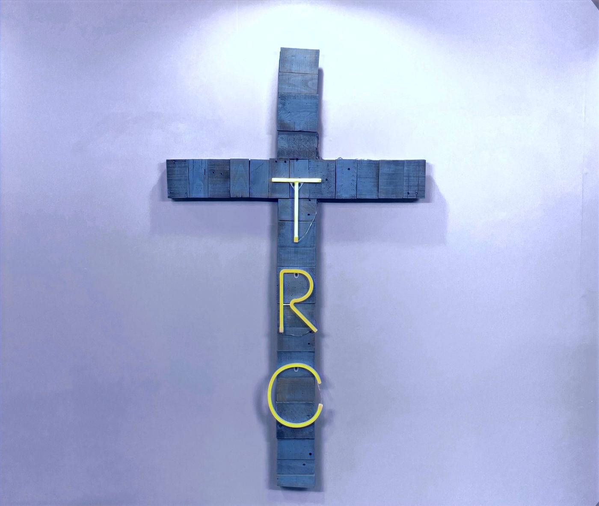

Wallingford Church of the Nazarene · Wallingford, CT
There's a place for you at The Rock Church
Whether you are new to church, have been a Christian for many years, or need a fresh start, we welcome you with open arms. Join us Sundays at 10:00 am at 26 Parker Farms Road in Wallingford.

- Sunday worship Sundays at 10:00 am
- Find us 26 Parker Farms Road, Wallingford
- Our family Church of the Nazarene
Join us
Join our community in Wallingford
Prayer is the key to all we do at The Rock Church. Come worship with us on Sunday morning, or pray with us in the middle of the week.
Sunday Service
Sundays
In the Main Sanctuary. Come as you are.
Wednesday Night Prayer
Wednesdays
Pray with us in the Church Sanctuary. Bring family and friends, share prayer requests and praise reports, and pray for one another.
Lots of opportunities to connect
-
GLOW Food Ministry
GLOW (Gleanings Lovingly Offered in Wallingford) connects people and families in need with food. The church says it serves over 100 families each week. First come, first served, with no advance sign-up and no prerequisites.
-
Individual Prayer
Whether you're in need of prayer or you'd like to pray for someone you know, we welcome the opportunity to pray with you. Our heart is to minister to everyone needing a touch from God.
-
Get Baptized
Baptism is a one-time outward profession of the inward reality of faith in God through Jesus Christ. If you're ready to take that step, we'd be glad to talk with you.
-
Discovering Jesus
Have you ever wondered what a relationship with Jesus is all about? Maybe this is new to you, or you're just curious. You're not alone, and if you have questions, need prayer or want to talk to a leader, we'd love to help.
Our story
More than a church
The Rock Church is a community of faith rooted in the love of God. We believe worship is not just found in prayer. It's something expressed in everything we do, and it's deeply rooted in the Word of God, the Bible.
We are people from many nationalities and every walk of life who love Jesus. Come and experience God's mercy, love and grace for yourself. There's a personal place for you in God's heart and in our family.
Our pastors have served this congregation for years. Pastor Jeffrey Walsh came to the Wallingford Church of the Nazarene in 2013 and became Senior Pastor about a year later. Pastor Alex Mack began leading worship here that same year.
"In Jesus' day, His critics said in scorn: 'This man receives sinners!' They were right, and He lived and died and rose again to prove it. The blessed part is this: He is still receiving sinners!"
Our pastors
-
Pastor Jeffrey Walsh
-
Pastor Alex Mack
-
Pastor Sherry Nason
What we believe
Rooted in the Word of God
Our philosophy is deeply rooted in the Word of God, the Bible: life's only guidebook. Here is the heart of what we believe.
- The Bible. The 66 books of the Old and New Testament are the inspired Word of God and the authority over our faith and conduct.
- One God. We believe in the one true God, eternally existing in three persons: Father, Son and Holy Spirit.
- Jesus Christ. Jesus is fully God and fully man; He lived a sinless life, died on the cross for our sins, and rose bodily from the tomb on the third day.
- Saved by grace. Salvation is a free gift of God's grace, not the result of our own works, received through repentance and faith in Jesus. We call this being born again.
- Growing in holiness. Sanctification is God's progressive work of making us holy, and becoming more like Christ is a lifelong journey.
Church of the Nazarene
The Rock Church is the Wallingford congregation of the Church of the Nazarene, known formally as the Wallingford Church of the Nazarene.
Get in touch
Visit The Rock Church in Wallingford
Ask a question, share a prayer request, or let us know you're coming. Give us a call. We'd be honored to help you with next steps.
26 Parker Farms Road
Wallingford, CT 06492
Get directions
Follow us
Each week at The Rock
- Sunday Service
- Sundays, 10:00 am
- Wednesday Night Prayer
- Wednesdays, 7:00 pm
- GLOW Food Ministry
- Fridays, 4:00 to 5:00 pm
Privacy
This website has no forms, uses no cookies and runs no analytics or tracking. We do not collect any personal information through it.
The site is hosted on GitHub Pages, and its fonts load from Google Fonts. Like any web server, those services may receive your device's IP address and basic browser details when the page loads, under GitHub's and Google's own privacy policies.
The links for directions, Facebook, Instagram and the Church of the Nazarene listing take you to other websites, each with its own privacy policy. If you call us, the call goes through your own phone provider, just like any other call. For any questions, call (203) 269-9313.